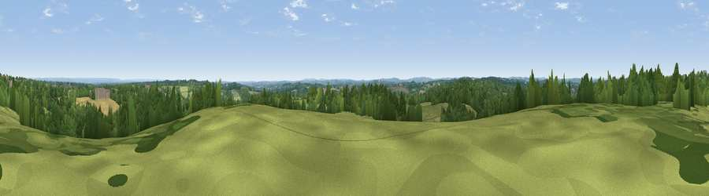

Viewpoint near Hartley
#34287 in England · top 33% of its area beats it · near Hartley · path 228 mWhere it is
The exact computed spot (TQ 75975 33925). Click the marker for map links.
Public access: the nearest public right of way is about 228 m away — the final stretch may cross private land. Computed from Natural England's CRoW access layer and OpenStreetMap rights of way — not the legal definitive map. Always verify locally.
The view, rendered

A 360° render of this exact spot computed from the terrain model, tree cover and land cover — summer colours, afternoon light, calibrated against photographs of famous viewpoints. Real trees, hedges and buildings will differ in detail.
The panorama
Grey silhouette: terrain skyline in each direction (720 bearings, Earth curvature and refraction included). Dashed green: skyline with trees (+15 m) and buildings (+8 m) as obstacles. Blue strip: how far the ground is visible on each bearing.
Where the view opens
Wedge length = distance to the farthest visible ground on that bearing (vegetation-aware). Rings at 10, 25 and 50 km.
What fills the view
49% woodland · 35% grassland · 14% cropland · 2% built-up
Angular shares of the visible panorama (visual magnitude), not map area. Landscape diversity 0.47 (0–1 Shannon).
Key numbers
More beautiful places nearby
The staircase of upgrades: each row has a higher view potential than everything closer. Driving times are estimates from straight-line distance, calibrated against real road routing — check an actual route before setting out.
| Place | Direction | Drive | Score |
|---|---|---|---|
| Blackbush Wood Hill | NW · 2 km | ~6 min | 40.4 |
| Viewpoint near Sissinghurst | N · 6 km | ~12 min | 42.6 |
| Viewpoint near Brenchley | NW · 11 km | ~22 min | 44.7 |
| Viewpoint near Netherfield | SSW · 15 km | ~27 min | 60.3 |
| Brightling Obelisk [Brightling Down] | SW · 16 km | ~28 min | 69.1 |
| Viewpoint near Three Oaks | SSE · 22 km | ~37 min | 69.3 |
| Viewpoint near Guestling Green | SSE · 24 km | ~39 min | 72.2 |
| Viewpoint near Fairlight | SSE · 24 km | ~39 min | 74.5 |
51.07766, 0.51077 · source: screening · position refined by local search. Computed location — check access rights before visiting.